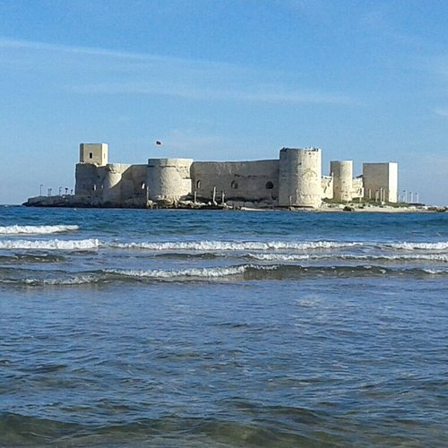

Erdemli İlçesi

Erdemli, Mersin'in önemli turistik ve tarımsal ilçelerinden biridir. Özellikle limon ve domates üretimiyle tanınır.
Gezilecek Yerler
- Kızkalesi: Denizin ortasında yer alan bu tarihi kale, Erdemli'nin simgelerindendir.
- Kanlıdivane: Antik dönemden kalma bu ören yeri, arkeoloji meraklılarının ilgisini çeker.
- Çamlık Piknik Alanı: Doğayla iç içe vakit geçirmek isteyenler için ideal bir mekandır.
Yöresel Lezzetler
Erdemli'de taze sebzelerle hazırlanan salatalar ve zeytinyağlı yemekler oldukça popülerdir. Ayrıca narenciye ürünleri de yaygındır.
Ana Sayfaya Dön